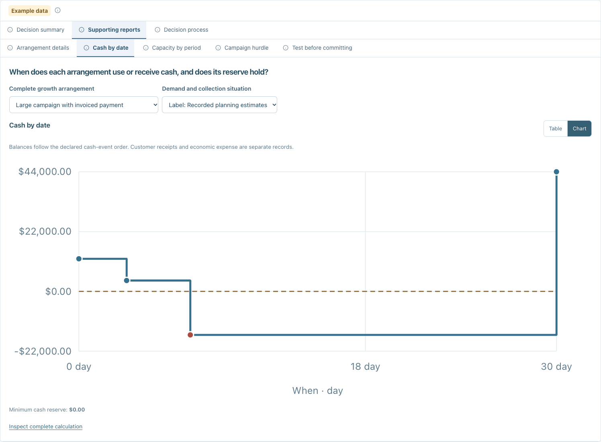
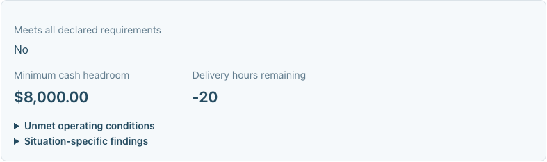

Leah has three days to decide whether to commit next month's campaign spending. Her business sells a standardized service package for $1,500. Delivery costs $500 and requires five hours per customer. Sales sees room to grow: each additional customer contributes $1,000 before campaign expense.
The delivery lead sees the calendar. Finance sees the payment dates. Leah has $12,000 available after other obligations and 140 incremental delivery hours. If she buys more work than the business can fund or deliver, a successful campaign could create the next operating problem.
Leah, her business and all quantities in this series are fictional. The worked example uses the Choose next month's growth commitment workflow in the Business growth collection. Open the shared workflow guide to inspect the supplied cases.
Compare the commitments behind the campaign pitches.
Leah could build a spreadsheet with an ordered cash ledger, delivery-capacity checks and explicit customer assumptions. Comparing campaign margins or ending balances alone would miss an earlier cash shortage or insufficient delivery hours. She needs those conditions in the same complete comparison.
An arrangement is a complete combination of campaign expense, assumed customers, payment terms, delivery work and dates. The customer counts are supplied planning assumptions, not demand forecasts generated by Decision Lab. The campaign quote becomes a fixed expense once committed; fewer customers do not refund it.
| Arrangement | Peak funding needed | Delivery hours | Operating finding |
|---|---|---|---|
| Keep the current approach | $0 | 0 | Fits |
| Large campaign, invoice after delivery | $28,000 | 200 | Cash and capacity blocked |
| Small campaign, invoice after delivery | $7,000 | 50 | Fits |
| Medium campaign, payment before delivery | $4,000 | 100 | Fits |
The current approach is the no-expansion alternative. Its zero values concern this incremental growth decision; they do not say that the existing business has no receipts, costs or work.
A positive ending balance can hide an earlier shortage.
The large campaign pays an $8,000 quote on day three and $20,000 of delivery expense on day seven. Its $60,000 of customer receipts arrive on day thirty. Starting with $12,000, Leah would reach negative $16,000 before receiving that money. The later balance does not fund the earlier payment.


The medium prepaid arrangement has a different sequence: a $4,000 campaign payment, then customer receipts before the $10,000 delivery payment. Its total campaign and delivery expense is still $14,000. The $4,000 peak funding requirement describes the opening funding needed under those dates; it is not the total expense.
Decision Lab checks cash after each ordered event, including any declared reserve. These inputs assume the recorded amounts are collected on the recorded dates. A promise to pay does not establish that payment will arrive; Leah needs a credible operating basis for those dates.
The same campaign can fit one delivery context and fail another.
Now consider an alternative planning context: another commitment leaves only 80 delivery hours available. Leah changes that input alone. The campaign quotes, customer assumptions, payment dates and $12,000 cash remain the same.
Shared basis. The same four arrangements, $12,000 opening cash, no required reserve, customer assumptions, campaign quotes, package economics, payment dates and three-day commitment cutoff.
What changes. Only available delivery capacity changes: 140 hours versus 80 hours in the same period.
140 delivery hours
Two expansion arrangements fit.
- Delivery hours available
- 140
- Medium prepaid campaign requires
- 100 hours

Both the small invoiced and medium prepaid campaigns meet the recorded cash, capacity and timing conditions. The large campaign remains blocked. The app does not automatically choose among passing arrangements.
80 delivery hours
Only the smaller expansion fits.
- Delivery hours available
- 80
- Medium prepaid campaign requires
- 100 hours


The medium prepaid campaign has a 20-hour shortfall. The smaller invoiced campaign needs 50 hours and still fits; keeping the current approach remains available.
What this means for the decision. An arrangement with sufficient funding can still fail delivery capacity. A changed operating limit requires a new calculation, not a new business rule.
The medium campaign needs 100 hours and is now blocked. Its payment terms still solve the earlier funding problem, but they cannot supply the missing delivery hours. The small campaign needs 50 hours and remains workable. Keeping the current approach also remains available.
This is aggregate capacity within the declared delivery period. The comparison does not construct individual staff schedules, prove particular qualifications or allocate hours across every customer task. Those would need a more detailed authored model.
Use the summary to find the question that matters next.
Leah enters the values in Inputs, applies the changes and chooses Calculate or Recalculate. The Decision summary identifies the supplied arrangements that fit. Supporting reports expose the cash sequence, delivery capacity and the conditions behind a blocked result. The cash view offers both a table and a chart.
Changing capacity makes the previous finding stale until Leah recalculates. Inspecting an arrangement does not select it, purchase a campaign or reserve delivery time. The operating app deliberately provides no automatic preferred arrangement.
This is Make a Bounded Commitment in a growth setting. The supporting Commitment Assessment checks complete candidates against connected operating requirements. A good customer margin cannot compensate for failed funding or capacity.
Leah can explain what the business can carry.
She can set aside the large invoiced proposal under either capacity context. With 140 hours, the smaller invoiced and medium prepaid proposals remain on the shortlist. With 80 hours, she can pursue the smaller campaign or retain the current approach, unless she changes the operating basis and reassesses.
That resolves the immediate argument between sales, delivery and finance: each can see which complete commitments meet the recorded limits and why. It does not settle whether the spending is worthwhile. Next, Leah asks what the $4,000 campaign must achieve to cover its expense.